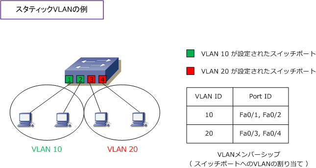
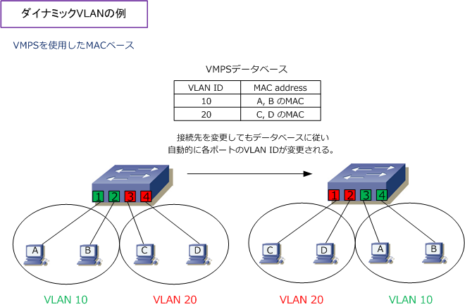
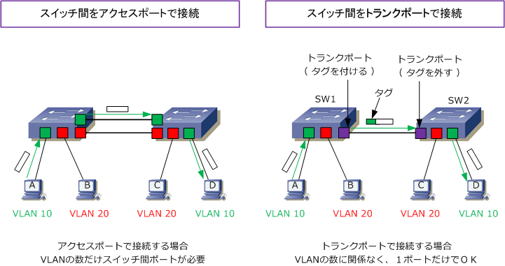
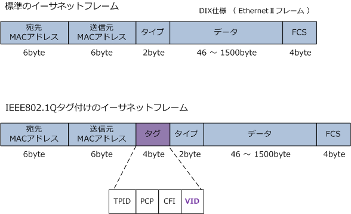
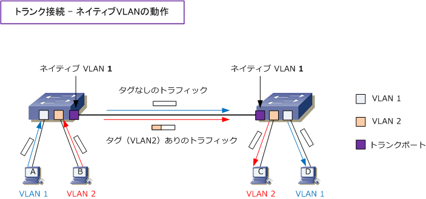
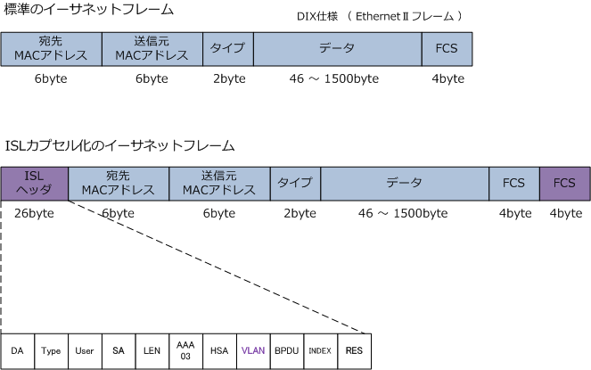

VLAN - Access Port / Trunk Port
アクセスポートとトランクポート
VLAN機能のあるスイッチにはアクセスポートとトランクポートの2種類のポートがあります。アクセス ポートは1つのVLANだけに所属するポートです。トランクポートは複数のVLANに所属するポートです。
アクセスポート
アクセスポートは、1つのVLANだけに所属するポートです。通常、コンピュータなどのデバイスは1つの ネットワークに所属するのでアクセスポートを使用します。このアクセスポートを設定するための方法は スタティックVLANとダイナミックVLANの2種類があります。
① スタティックVLAN スタティックVLANは、スイッチポートに管理者が手動でVLANを割り当てる方法です。アクセスポートと いえばこのスタティックVLANで設定することが一般的です。設定が簡単であるというメリットがあります。

② ダイナミックVLAN ダイナミックVLANは、接続するデバイスによってポートが動的に所属するVLANを変更できるVLANです。 接続するデバイスのMACアドレスにより決定するMACベースVLAN、IPアドレスにより決定するサブネット ベースVLAN、ユーザ名などの情報に基づいて決定するユーザベースVLANなど、大きく3種類があります。
ここではMACベースVLANを説明します。MACベースVLANを使用する場合は、事前にどのMACアドレスを を持つデバイスをどのVLANに所属させるのかマッピングを定義する必要があります。このデータベースは VMPS（VLAN Management Policy Server）サーバで保持します。ダイナミックVLANが設定されたポート にデバイスが接続すると、送信元MACアドレスがどのVLANに所属するのかVMPSサーバに問い合わせます。

CCNA対策という点でVMPSを紹介していますが、実際の企業ネットワークで導入するダイナミックVLANは 802.1X認証ポートで、ADと連携してユーザ/グループ/OU名に応じてVLANを割り当てる手法が一般的です。
トランクポート
トランクポートは複数のVLANに所属するポートです。主にスイッチ同士を接続する際に使用するポートです。 2台のスイッチに設定したVLANがまたがっている場合、例えば下図でホストA ⇔ D間、B ⇔ C間で通信させる ためには2つの方法があります。1つは、スイッチ間を接続する専用のアクセスポートをVLANごとに作成して ケーブル接続する方法（左下図）です。この方法では、VLANの数だけスイッチ間でポートが必要となります。

もう1つは、スイッチ間の接続ポートをトランクポートにして1本の物理リンクで複数のVLANトラフィック を伝送させる方法（右上図）です。トランクポートで接続したリンクのことをトランクリンクと呼びます。
1本のトランクリンクに複数のVLANトラフィックを伝送しても、どのVLANトラフィックなのかを識別する ためにトランクリンクでフレームを伝送する際にタグ（VLAN識別情報）を付けます。右上図でホストAから Dへ送信したフレームはSW1のトランクポートでVLAN 10というタグが付加され、SW2のトランクポートで VLAN10というタグを読み取り、タグを外してVLAN10が割り当てられたポートにのみフレームを伝送します。
トランキングプロトコル
トランクリンクでVLANを識別するためにタグを付加するプロトコルにはIEEE802.1QとISLの2つがあります。 IEEE802.1Qは、IEEEで標準化されているプロトコルで現在最も使用されているトランキングプロトコルです。 dot1q (ドットイチキュー) と呼ばれています。IEEE802.1Qでは送信元MACアドレスとタイプフィールドの間 にタグと呼ばれる4バイトのフィールドを挿入します。4バイトは、2バイトのTPID (Tag Protocol Identifier) 2バイトのTCI（Tag Control Information）により構成。TCIの中身は「プライオリティ、CFI、VID」の3つ。

| フィールド | ビット数 | 説明 |
|---|---|---|
| TPID（Tag Protocol Identifier） | 16 | IEEE802.1Qフレームであることを受信側に示す情報。0x8100 の値が入る。 |
| PCP（Priority Code Point） | 3 | IEEE802.1pで定義されたフレームの優先度を示す情報。 0～7 の値が入る。 |
| CFI（Canonical Format Indicator） | 1 | アドレス形式を示す情報。イーサネットの場合は 0 の値が入る。 |
| VID（VLAN Identifier） | 12 | VLAN IDを示す情報。 0～4095 の値が入る。 |
IEEE802.1QトランクではネイティブVLANというトランクリンクでタグを付加せず転送するVLANがあります。 タグなしフレームを受信したスイッチは、そのフレームはネイティブVLANからのトラフィックとして認識する ことから、トランクリンクの両端でネイティブVLANのIDを同じ値にする必要があります。なお、デフォルトの ネイティブVLANはVLAN 1となります。このネイティブVLAN（タグなしVLAN）でCDP、PAgP、VTP、DTP などの制御トラフィックが流れます。

ISL（Inter-Switch Link）はシスコ独自のトランキングプロトコルです。IEEE802.1Qの場合はイーサネット フレームへの挿入を行いましたが、ISLでは、イーサネットフレームへのISLヘッダとFCSを付加しカプセル化。

| フィールド名 | ビット数 | 説明 |
|---|---|---|
| DA | 40 | 宛先アドレス。「0x01-00-0c-00-00」 のマルチキャスト |
| Type | 4 | Ethernet「0000」 TokenRing「0001」 FDDI「0010」 ATM「0011」 |
| USER | 4 | イーサネットの優先度、通常は「0」 |
| SA | 48 | 送信側Catalystスイッチポートの48ビットの送信元MACアドレス |
| LEN | 16 | DA, Type, USER, SA, LEN, FCSを除く16ビットのフレーム長 |
| SNAP/LLC | 24 | 標準SNAP 802.2LLCヘッダ |
| HSA | 24 | SAの先頭の3バイト |
| VLAN ID | 15 | VLAN番号 |
| BPDU/CDP | 1 | フレームがBPDUであるか、CDPであるかを示す情報 |
| INDEX | 16 | 診断用の送信元ポートのインデックス情報 |
| RES | 16 | FDDIなど追加の情報用に予約済みのフィールド |
トランキングプロトコルの比較
| トランキングプロトコル | IEEE802.1Q | ISL |
|---|---|---|
| 規格 | IEEE標準 | シスコ社独自 |
| 方式 | タギング方式 | カプセル化方式 |
| ネイティブVLAN | サポートあり | サポートなし |
| 付加されるフレームサイト | 4バイト | 30バイト |
| トランクによるイーサネットフレームサイズ | 1522バイト | 1548バイト |